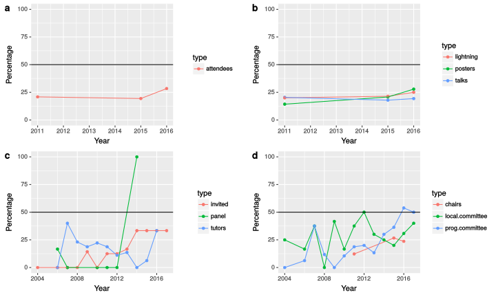

Overview
Current Efforts
The survey sub-team is focused on monitoring diversity and exploring obstacles, motivations, and involvement of useRs in the community. Diversity will be monitored via basic demographic summaries from specifically designed surveys or other community surveys (e.g. useR! feedback survey).
Former Efforts
The taskforce collates data on the gender breakdown and other demographics of contributors to the R project, particularly R Foundation supported activities. For many of the gender summaries the gender was predicted based on first name, giving a rough approximation that assumes binary gender categories.
Packages
Maintainer Demographics 2017
In Pinto, Wiese & Dias (2018). How Do Scientists Develop Scientific Software? An External Replication, the authors surveyed CRAN maintainers that self-identified as a scientist. The survey was conducted starting in late November 2017 and ending in early January 2018. The respondents were contacted by email and asked to complete an online questionnaire, with a response rate of 24% (a total of 1,553 responses).
-
44.6% of respondents self-identified between 30 and 40 years of age at the time of the survey.
-
Overwhelmingly, 80.0% of respondents self-identified as either having a completed or in-progress doctorate degree.
-
16.5% of the respondents self-identified as being located outside of Europe and North America.
Author Demographics 2010
Mair, P., Hofmann, E., Gruber, K., Hatzinger, R., Zeleis, A. and Hornik, K. (2015) Motivation, values, and work design as drivers of participation in the R open source project for statistical computing, PNAS describes the feedback from 1087 R package authors. The survey was conducted in 2010. Package authors were contacted by email and asked to complete a web form, with a response rate of 27%.
- The 95% confidence interval for the proportion of women package authors in 2010 is 7.1-11.0%.
- 32.5% of authors are from the USA, but they are distributed across the globe, including Indonesia, Kenya, Slovenia and Singapore.
- The average package author was almost 39 years old, 50% of authors are between 30 and 45, and the youngest was 20.

Conferences
Data is being collated on past useR! conferences, the plots below show the data gathered so far.
The proportion of contributed presentations is similar to the proportion of female attendees, showing that women are as likely to contribute and have their contributions accepted as their male counterparts. There was a greater increase in poster contributions from women than lightning or regular talks in 2016, which perhaps reflects a lower level of experience among the newcomers.
Plot c shows groups that are more heavily selected. The numbers of female invited speakers has increased from zero in the early years (2004-2008) through one in later years (2009-2013) to two in recent years - this is the level that useR! is seeking to maintain for now. The number of tutorials with a female tutor was decreasing since 2007, but went up again to 1/3 in 2016. This is the target for 2017. useR! does not always have panel sessions, but apart from a panel in 2014 on women in the R community, women have been poorly represented. This is something useR! plans to address in any future panels.
The last plot shows invited organisational roles. Data on session chairs is only available for a few years, but recently the proportion of women has been similar that of attendees. The proportion of female committee members has been slowly rising to parity over the history of useR! (with an unusual high in 2007 when Di Cook, a taskforce member was a key organiser). The make-up of the local organising committee is much more variable, partly because the size of the committee changes a lot according to local needs. In recent years the proportion of women on the committee has been similar to or greater than that of attendees.